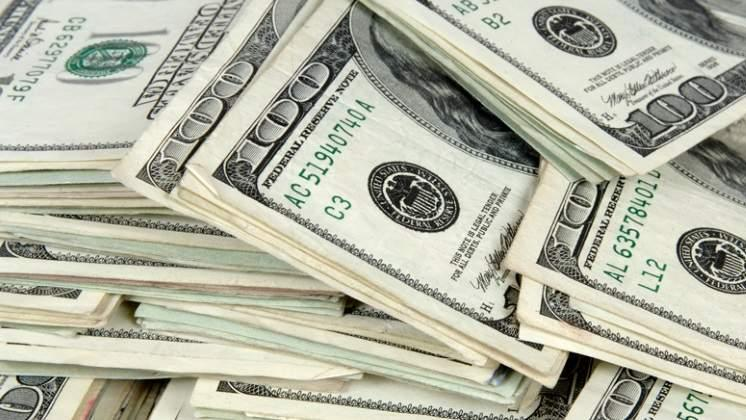

Dólar blue hoy jueves 14 de abril: a cuánto cotiza
La cotización del dólar paralelo sigue en su nivel más bajo en seis meses, sin mostrar variaciones en el último tiempo. Toda la información de la moneda estadounidense y sus cotizaciones.

El Dolar Blue Hoy cotiza este jueves 14 de abril de Semana Santa a $ 192 para la compra y $ 195 para la venta. Este valor se mantiene desde la tarde del lunes, jornada en la que bajó un 0,77 por ciento su cotización, ya que la moneda había comenzado a negociarse a $192,50 para la compra y $196,50 para la venta.
Así, el dólar paralelo sigue en su precio de venta más bajo desde el 24 de octubre de 2021, cuando tocó los $ 194.
La brecha con respecto a las cotizaciones oficiales es de 72,6% con respecto al precio del dólar mayorista y de 65,3% con respecto al dólar valorizado por el Banco Central (BNA).
El dólar blue hoy se mantiene además en valores similares a los del dólar solidario, el dólar MEP y el contado con liquidación.
| CotizaciónUSD | Compra | Venta |
|---|---|---|
| Dólar BNA | 133 | 145 |
| Dólar Blue | 193 | 195 |
| Dólar Solidario | 155 | 156 |
| Dólar MEP | 172 | 176 |
| Dólar CCL | 185 | 186 |
DÓLAR OFICIAL
El dólar oficial del jueves 14 de abril sigue a $ 112 para la compra y a $ 118 para la venta en las pantallas del Banco Nación (BNA), establecimiento referencia para el seguimiento de la moneda estadounidense en los bancos.
La cotización del dólar BNA se modificó ayer por primera vez desde la jornada del lunes, subiendo un 0,21% desde los valores de $ 111,80 para la compra y $ 117,70 para la venta.

DÓLAR MEP O DÓLAR BOLSA
El dólar MEP hoy, a través del bono AL30, terminó la jornada de ayer con una disminución del 0,22% de su valor, cotizando $189,59 para la compra y $ 190,16 para la venta.
De esta manera, el dólar bolsa va a cumplir una semana ubicado por debajo de los $ 191, debido a que el lunes pasado rompió aquel piso y la próxima apertura del mercado será al inicio de la semana próxima.
LA CITY
Lea Tambien El dólar blue cayó a su valor más bajo en casi seis meses y comprime la brecha